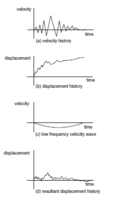

动力输入的施加
在 3DEC 中，动力输入可按以下两种方式之一施加：(a) 作为指定的速度时程；(b) 作为应力时程。方案 (a) 强制实现给定的精确速度时程。若只有加速度时程可用，则必须对其进行数值积分，以生成 3DEC 所需的速度时程。
方案 (a) 的缺点是，该边界不会是吸收（或非反射）边界（即它会将任何向外传播的应力波反射回模型）。为避免这一点，可采用方案 (b)：将速度记录转换为应力记录，并施加到非反射（黏性）边界上。出于类似目的，可用下式将速度时程转换为应力边界条件
或
其中：
\(\sigma_n\) = 施加的法向应力；
\(\sigma_s\) = 施加的剪应力；
\(\rho\) = 质量密度；
\(C_p\) = 介质中 P 波的传播速度；
\(C_s\) = 介质中 S 波的传播速度；
\(V_n\) = 输入的法向速度；以及
\(V_s\) = 输入的剪切速度。
回顾 \(C_p\) 由下式给出
而 \(C_s\) 由下式给出
式 (1) 和 (2) 中的系数 2 是为了计入以下事实：所施加的应力必须加倍，以克服黏性边界的影响。注意，在这种情况下，由于式 (1) 和 (2) 的一维近似，在边界处得到的速度时程可能与原始速度记录不同。
输入时程的基线校正
对时程进行“基线校正”，目的是使最终速度和/或位移为零。例如，在下图中，下面 (a) 部分的速度波形积分后可能得到 (b) 部分的位移波形。然而，可以确定一个低频波（(c) 部分），将其加到原始时程上后，所产生的最终位移为零（(d) 部分）。(c) 部分中的低频波可以是多项式或正弦函数，其中的自由参数经过调整以得到所需结果。
上述意见实际上只适用于复杂的波形，例如由现场量测得到的波形。当使用合成的简单波形时，很容易通过安排合成波形本身使最终位移为零。通常，在地震分析中输入波为加速度记录。基线校正可使最终速度和位移均为零。（关于标准基线校正方法的资料，请参阅地震工程教材。）

图 1：基线校正过程。
对输入记录进行基线校正的另一种替代方法是：若整个模型存在残余位移，则在计算结束时施加位移偏移。这可以通过对网格施加固定速度，将残余位移减小到零来实现。这一操作不会影响模型变形的力学机制。执行基线校正的计算机程序可从若干互联网站点获得。例如，USGS 强震计划数据处理页面（http://nsmp.wr.usgs.gov/processing.html） 提供了此类程序。
| 这些内容对您有帮助吗？… 版权与免责声明 | FLAC3D © 2019, Itasca | 原文更新于 2020 年 10 月 8 日 |